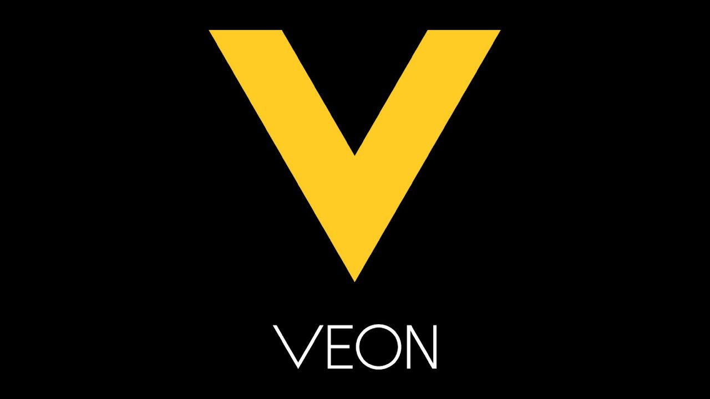
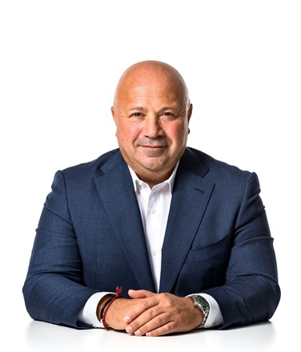

О компании
Veon - Холдинговая компания, контролирующая телекоммуникационные активы в странах СНГ и в ряде стран Азии и Африки. В группу входят российский сотовый оператор «Вымпел-Коммуникации», украинский «Киевстар», сотовые операторы в ряде стран СНГ, Banglalink в Бангладеш и Jazz в Пакистане.
Логотип компании
Собственники
Состав акционеров компании (февраль 2020):
LetterOne (47,9 %);
Administratiekantoor Mobile Telecommunications Investor (8,3 %);
остальные акции в свободном обращении (43,8 %).
Руководство
Каан Терзиоглу (англ. Kaan Terzioglu) — главный исполнительный директор;
Серкан Окандан (англ. Serkan Okandan) — главный финансовый директор;
Алекс Болис (англ. Alex Bolis) — руководитель группы по корпоративной стратегии, коммуникациям и IR;
Скотт Дрессер (англ. Scott Dresser) — главный юрисконсульт;
Йооп Бракенхофф (англ. Joop Brakenhoff) — руководитель группы по внутреннему аудиту и соблюдению комплаенса;
Дмитрий Швец (англ. Dmitry Shvets) — директор по портфельному менеджменту;
Майкл Шульц (англ. Michael Schulz) — директор по персоналу.
Главный исполнительный директор компании
История
Российская компания «Вымпел-Коммуникации» (сокращенно «ВымпелКом») была основана в 1991 году группой работавших в Радиотехническом институте имени А. Л. Минца специалистов в области связи во главе с Дмитрием Зиминым. Сооснователем компании выступил американский бизнесмен Оги Фабела. В августе 1993 года компания зарегистрировала торговую марку «Bee Line», под которой стала предоставлять услуги мобильной связи. В 1996 году «ВымпелКом» провел листинг на Нью-Йоркской фондовой бирже (NYSE); позже компания перешла на биржу NASDAQ. Выручка компании по US GAAP за 2010 год составила 10,5 млрд $ (за 2009 год, агрегированные показатели «Вымпелкома» и «Киевстара», — 10,07 млрд $) чистая прибыль — 1,67 млрд $ (1,3 млрд $). В начале 2012 года компания Нагиба Савириса Weather Investments II S.a.r.l. за 374,4 млн $ продала часть акций компании Telenor, которая таким образом увеличила свою долю в уставном капитале VimpelCom Ltd. с 25,01 % до 36,6 %. Доля Altimo остается на уровне 31,35 %. В начале апреля 2012 года Telenor продолжил увеличение доли в VimpelCom. На этот раз с 36,36 % до 39,51 % По итогам 2016 года общая выручка VimpelCom снизилась на 7,5 %, до 8,885 млрд $. Показатель EBITDA вырос на 12,4 % и составил 3,232 млрд $. Маржа по нему составила 40,3 % вместо 40,9 % по итогам 2015 года. Чистая прибыль VimpelCom — 2,4 млрд $ против чистого убытка в размере 647 млн $ год назад. Абонентская база холдинга достигла 207,5 млн клиентов, а с учетом совместного предприятия в Италии — 238,9 млн абонентов. Согласно прогнозу Veon, в 2018 году свободный денежный поток компании должен превысить 1 млрд $.. В июле 2017 года в России было запущено мобильное приложение Veon, позволявшее вести переписку, звонить, смотреть фильмы, слушать музыку, читать новости, получать скидки и купоны на товары и услуги. Приложение было доступно абонентам любых операторов, но потраченный при его использовании трафик был бесплатным для пользователей «Билайна» (в домашнем регионе). В ноябре 2019 года Telenor продала свой пакет из 157 млн акций в холдинге Veon. Сумма сделки составила 362 млн $. В сентябре 2021 года Veon в рамках оптимизации использования башен мобильной связи продала «Сервис-Телеком» за 970 млн «Национальную башенную компанию», в управлении которой — около 15 400 вышек сотовой связи из общих 50 000 в собственности Veon. Закрытие сделки ожидается до конца 2021 года. В разных странах Veon работает под различными брендами, занимая ведущие места на рынке.